Teaching Philosophy

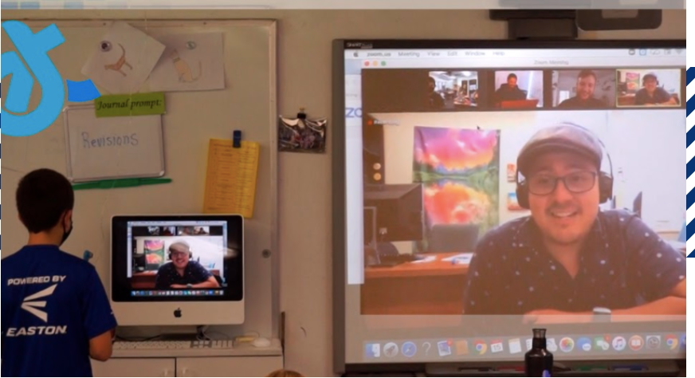
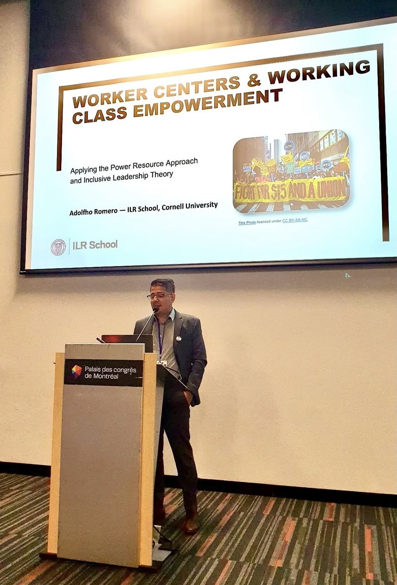
Active Engagement
Historical Inquiry
Inclusive Discussion
Connecting Past & Present
Download my full Teaching Philosophy (PDF)
Methods & Training
Selected programs that inform my research methods and pedagogy.
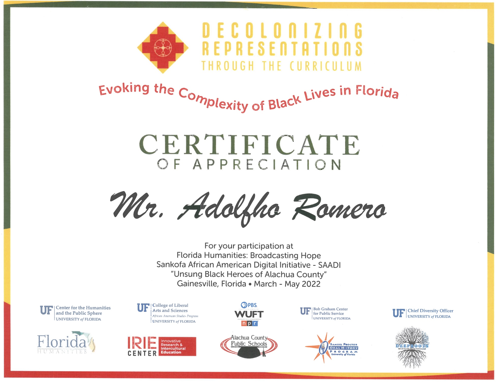
Visible items

Fieldwork Map & Career Timeline
Map of fieldwork, conferences and professional development
Courses Taught
2025
2024
2021
2020
Course Texts & Perspectives
Below are some of the books that anchor my courses. Each text opens a window onto the lived experiences of workers, activists, and artists. Scroll through the gallery to explore the covers and learn more about what we read.
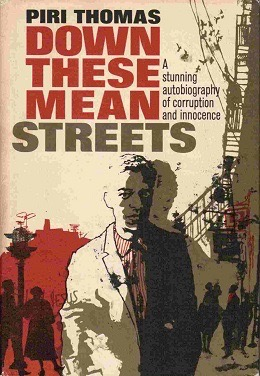
Piri Thomas’s memoir follows his life in Spanish Harlem. It chronicles poverty, street gangs, racism, addiction and his struggle to define his identity as a dark‑complexioned Puerto Rican.
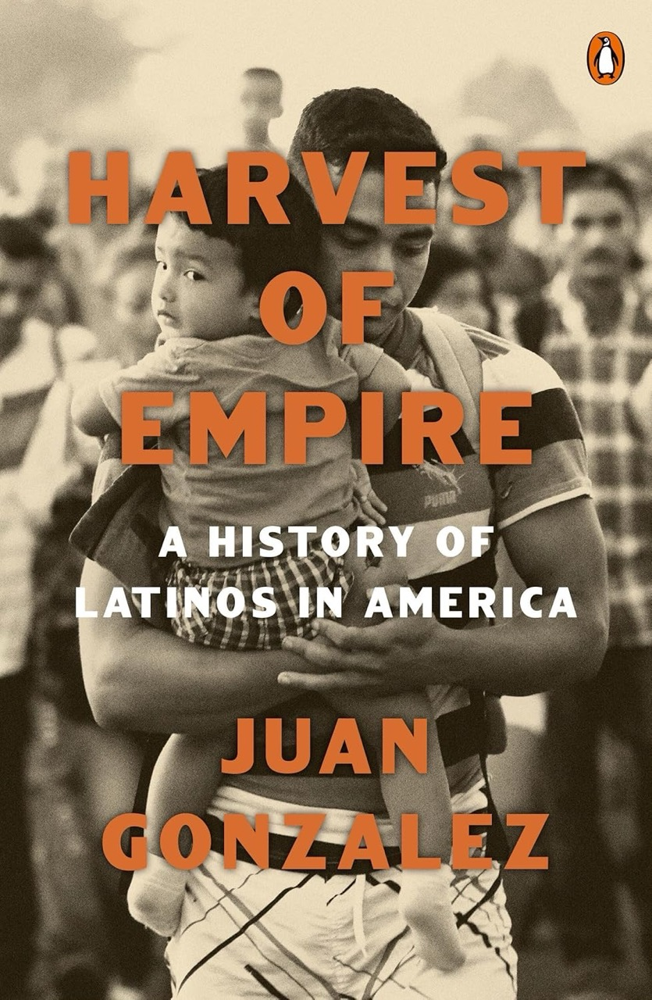
Juan Gonzalez presents a non‑fiction account of how U.S. policies throughout the Americas led to mass Latinx migration; his updated narrative explains the role the United States played in shaping these movements.
Paul Ortiz’s intersectional history centers Black, Latinx and Indigenous voices, linking civil‑rights struggles, labor organizing and imperialism from the 18th century through the Day Without Immigrants.
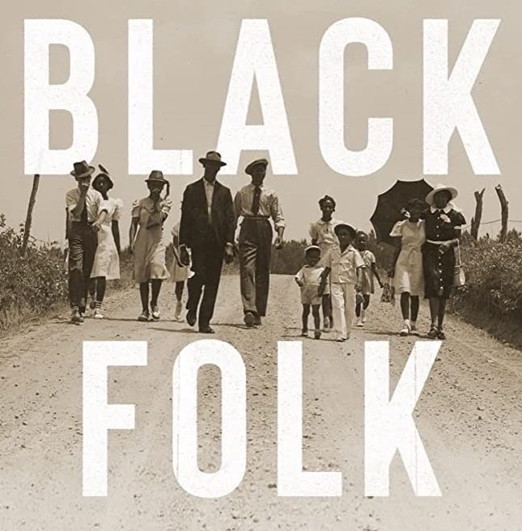
Blair L. M. Kelley uses personal narratives to show how Black laborers built networks of community and resistance amid racism and segregation in the late 19th and early 20th centuries.
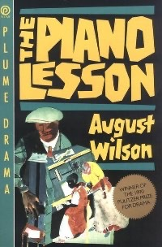
August Wilson’s Pulitzer Prize–winning play is set in 1936 Pittsburgh. It follows the Charles family and an heirloom piano carved by an enslaved ancestor; siblings Boy Willie and Berniece debate selling it, exploring heritage and the legacy of slavery.
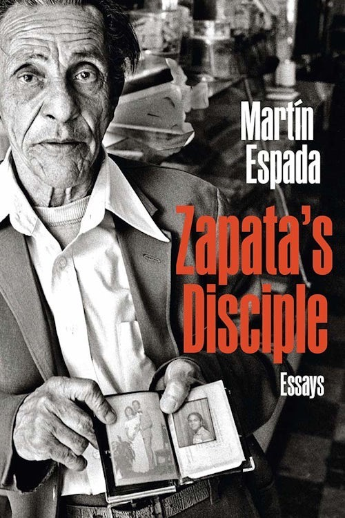
Poet Martín Espada interweaves essays and poems to challenge social injustice. He chronicles censorship battles, critiques corporate exploitation and defends the dignity of Spanish‑speaking communities.
Johanna Fernández provides a definitive account of the Young Lords. She shows how Puerto Rican youth redefined protest by occupying hospitals, blocking traffic and linking local problems to global struggles.
Marcus Rediker explores the horrific conditions aboard slave ships between 1700 and 1807, drawing on primary records to connect the transatlantic slave trade, capitalist exploitation and acts of resistance.
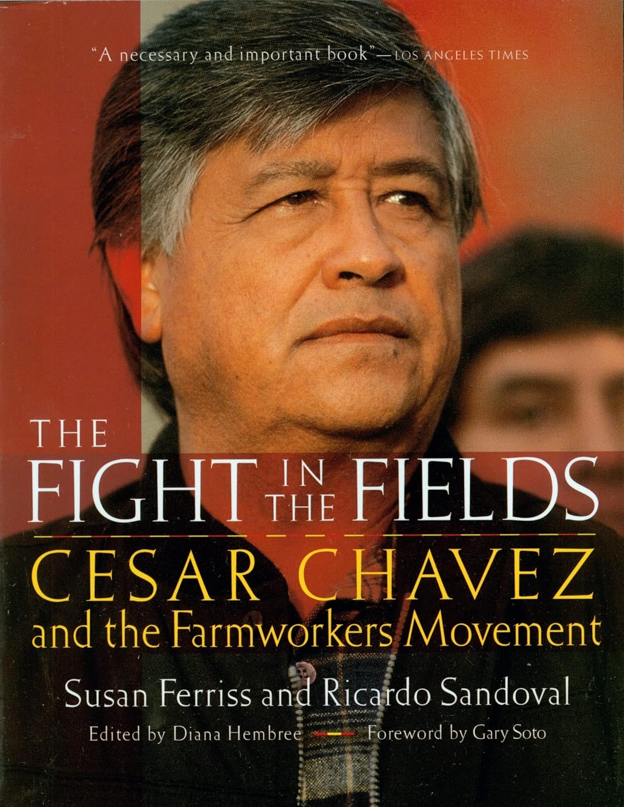
An illustrated history of Cesar Chavez and the United Farm Workers that combines archival photographs and narrative to trace the evolution of the farmworkers’ movement and its impact on labor and civil‑rights struggles.
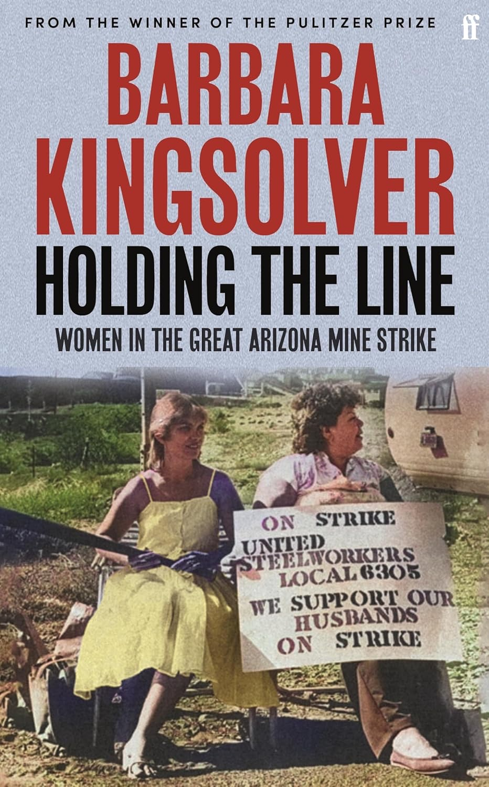
Barbara Kingsolver’s nonfiction debut recounts the 1983 Phelps Dodge copper strike in Arizona, focusing on the miners’ wives and mothers who formed picket lines, faced arrests and violence, and discovered their political power during the long standoff.
A collection of speeches and essays by labor radical Lucy Parsons, whose writings championed the rights of the poor, the unemployed and political prisoners and reveal her pivotal role in anarchist and workers’ movements.
Valerie Yow’s practical manual explains how to plan, conduct, transcribe and interpret oral‑history interviews, addressing ethical issues and providing methodological guidance for researchers in the humanities and social sciences.
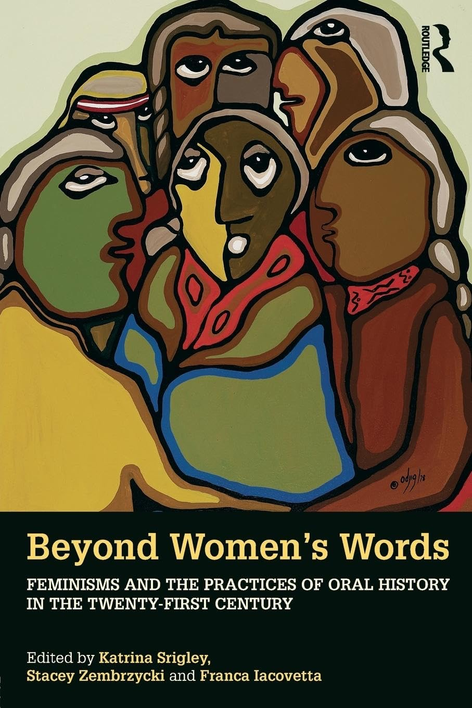
Edited by Katrina Srigley and colleagues, this collection explores feminist oral‑history methodologies and the ways gender, race and class shape personal narratives, drawing on examples from immigrant communities and Indigenous women’s activism.
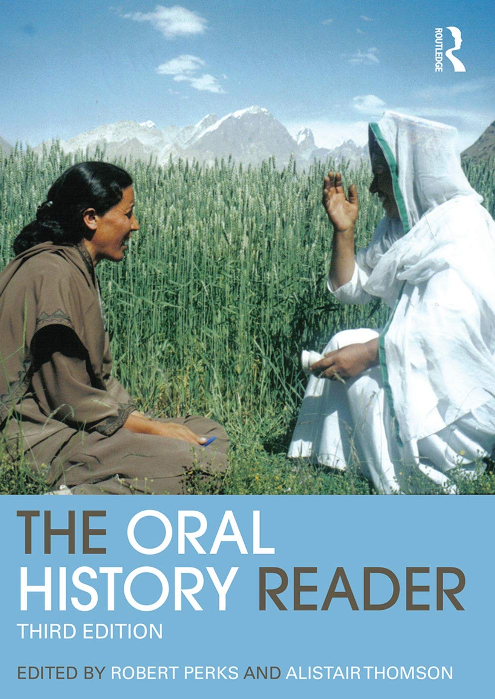
Edited by Robert Perks and Alistair Thomson, this widely used reader compiles classic and contemporary essays that examine theory, ethics and practice in oral history, offering insights into interview techniques, memory and digital media.
What Students Say
“Adolfho was incredibly approachable and made it easy to ask questions—even beyond class material. He connected class content to real-world labor struggles in a way that made history feel urgent.”
“He pushed us to engage with difficult topics like race, class, and labor injustice. I left each section with something to think about.”
“Adolfho was one of the best TAs I've had. His feedback on our essays was detailed and helped me grow as a writer.”
“He encouraged participation by creating a safe space where every opinion mattered. It never felt like busywork—it felt like building understanding together.”
“Very responsive, clear expectations, and genuinely cares about student learning. One of the most thoughtful TAs I've had.”
“He helped connect us to the professor and made sure our concerns were heard. He was super accessible and always respectful.”
“Adolfho is extremely professional but creates a warm and welcoming environment with his students and tries to build personal relationships.”
“He is very knowledgeable and very open to helping everyone.”
“Great in giving detailed feedback and actually writing new perspectives about the content in feedback.”
“Makes time for students, creates inclusive and meaningful conversations, and allows students to ask questions.”